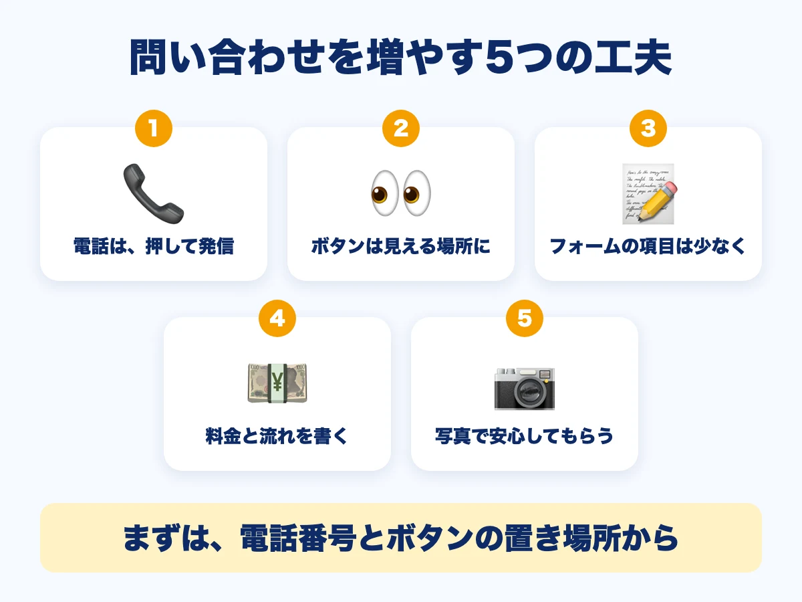

ホームページから問い合わせを増やす5つの工夫｜電話・フォーム・載せる内容

ホームページを作ったのに、問い合わせがなかなか来ない。そんなご相談は、少なくありません。見てくれる人はいても、「電話しよう」「フォームを送ろう」と思う前に、閉じられてしまっていることがあります。この記事では、問い合わせにつなげるための工夫を、5つにまとめます。
- 工夫は「電話を押せる」「ボタンを見える場所に」「フォームを短く」「料金と流れを書く」「写真で安心してもらう」の5つ
- お客様が迷う場所を、ひとつずつ減らすのがコツ
- どれも、ホームページの文章や配置の見直しで、始められる

1. 電話番号を、押して発信できるようにする
ホームページは、スマートフォンで見られることが多いです。電話番号を、画面を押すだけで発信できるようにしておくと、お客様が番号をメモして打ち直す手間がなくなります。ページの上のほうや、いちばん下にも、電話番号を置いておきましょう。受付の時間も、あわせて書いておくと安心です。
2. 問い合わせボタンを、見える場所に置く
「問い合わせはこちら」のボタンが、ページの下のほうにしかないと、気づかれないことがあります。ページを開いて最初に見える範囲と、各ページの終わりに、ボタンを置きましょう。ボタンの言葉も、「送信」より、「無料で相談する」「予約する」のように、押したあとのことがわかる言葉が親切です。
3. フォームの項目を、少なくする
入力する項目が多いと、途中でやめてしまう方が増えます。最初は、お名前・連絡先・ご用件など、本当に必要なものだけに絞りましょう。細かいことは、返信したあとで聞けます。
4. 料金と、依頼の流れを書く
「いくらかかるのか」「頼むとどう進むのか」がわからないと、問い合わせをためらってしまいます。料金は、目安でも書いておくと、お客様が安心します。流れは、ホームページ制作の流れのように、ステップで見せるとわかりやすいです。
5. 写真で、安心してもらう
お店の外観や、スタッフ、仕事の様子の写真があると、「どんな人がやっているのか」が伝わります。初めて頼む方ほど、顔や場所が見えることで安心します。撮り方のコツは、ホームページの写真は、スマホで十分？をご覧ください。
| 工夫 | まず見直すところ |
|---|---|
| 電話番号 | スマホで押して発信できるか |
| 問い合わせボタン | 最初の画面と、各ページの終わりにあるか |
| フォーム | 項目が多すぎないか |
| 料金・流れ | 目安と手順が書いてあるか |
| 写真 | お店・スタッフ・仕事の様子があるか |
地域の検索で見つけてもらうことも大切
問い合わせの前に、まず、ホームページを見つけてもらう必要があります。Googleマップの情報をそろえることや、地域の名前を入れた説明は、その助けになります。ホームページとGoogleマップの関係や、Googleマップへの登録のやり方もご覧ください。
RAIZONでは
RAIZONは、東大阪市の下小阪を拠点に、お店や会社のホームページを月額制で制作しています。初期制作費は0円、月額9,800円（税抜）。月4回までの修正・更新が含まれ、ボタンの位置や文章の見直しにも対応します。最低契約期間はありません。なお、ホームページを作れば必ず問い合わせが増える、とはお約束できません。
よくある質問
問い合わせフォームと電話、どちらを置くべきですか？
両方置いておくのがおすすめです。電話のほうが早いという方もいれば、フォームのほうが気軽という方もいます。お客様が選べる形にしておきましょう。
どのくらいで効果が出ますか？
お店や業種、ホームページを見る人の数によって違います。変えたあとの数字を、少し長い目で見て、次の手を考えるのがおすすめです。
見直しを相談したいです。
お問い合わせフォームから、お気軽にご相談ください。
ほかのコラム
 制作の基礎
制作の基礎ホームページは自作？制作会社？月額制？｜3つの作り方を比べて選ぶ
ホームページを自分で作る方法、制作会社に頼む方法、月額制のサービスに頼む方法を、費用・手間・更新のしやすさ・困ったときの相談先の4つの視点で比べます。東大阪の個人事業主さん・小さなお店向けに、選び方をやさしく解説します。
 制作の基礎
制作の基礎東大阪の美容室・サロンのホームページに載せたい7つのこと｜メニュー・予約・スタッフ
東大阪の美容室・サロンがホームページを作るとき、載せておきたい情報を7つに整理しました。メニューと料金、予約の方法、スタッフ、施術の写真、行き方、営業時間、お知らせの載せ方をやさしく解説します。
 制作の基礎
制作の基礎東大阪の飲食店のホームページに載せたい7つのこと｜メニュー・地図・予約
東大阪の飲食店がホームページを作るとき、載せておきたい情報を7つに整理しました。メニューと料金、営業時間、行き方、写真、予約・問い合わせ、お店の紹介、お知らせの載せ方をやさしく解説します。